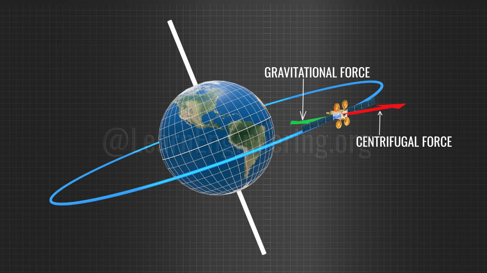

We live our lives knowing that many satellites orbit our planet everyday, and that they are helping us in several ways. You might be surprised to know that there are almost 4,900 satellites orbiting the earth. The most obvious questions that come to mind are: Why are these satellites in totally different orbits? How does a satellite carry out all of its functions? And, what are the components inside them, which help them to accomplish all of their allotted tasks? Let's explore the answers to all these questions in detail.
History of satellites
The era of the satellite technology began with the launch of the satellite named Sputnik. It was a 23 inch diameter polished metal sphere, carried mainly thermometer, battery and 4 external antenna as shown in Fig:1. It was launched by the Soviet Union on 4 october, 1957 and had a life of 22 days. Today’s satellites have an average life of 10-15 years.
What makes a satellite to stay in orbit?
It’s a well-known fact that a satellite stays in orbit because of the balance between gravitational pull and centrifugal force as shown in Fig:2. The angular velocity of the satellite is decided by the force balance equation that balances the gravitational and centrifugal forces. When the satellite is deployed it is given sufficient speed to balance these two forces. A satellite near to earth requires more speed to resist the gravitational pull than the ones located further from the earth. Due to the negligible resistance in space, satellites never lose speed; this means satellites will continue their circular motion around the earth without any external energy source.
Three classes of orbit and van allen belt
Satellites are placed either in Low Earth Orbit(LEO), Medium Earth Orbit or Geosynchronous Earth Orbit. These three orbits are illustrated here in Fig 3a .
These three orbits are illustrated here in Fig:3A . We will get it into more details of them later. There is an interesting region in space called the Van Allen belt, a region full of highly energetic, charged particles, which could seriously damage the electronics section of a satellite. Generally it is preferred not to park satellites in the Van Allen belt as shown in Fig 3b.
The decision on what orbit is to be chosen for placing the satellite depends on the application and purpose of the satellite.
LEO : The orbit that close to Earth
Key Features of LEO
If the satellite is built for earth observation, weather forecasting, geographic area surveying, satellite phone calls etc. then orbits closer to the earth are chosen. LEO is the closest to the earth at an altitude of between 160 and 2,000 kms and its orbital period is approximately 1.5 hours (Fig:4). But these types of satellite cover less area of the earth; so many satellites are required to obtain global coverage.
GEO : The orbit that far from Earth
Key Features of GEO
That's why, in the case of broadcasting, a high orbit such as GEO is chosen. Satellites in geosynchronous orbit are at a height of 35,786 kms and rotate at the same angular speed as the earth (Fig 5a).
It means the satellite takes exactly 23 hours 56 minutes and 4 seconds to complete one rotation. Within the geosynchronous orbit there is a special category of orbit called geostationary orbit, which is concentric to the equator of the earth. These satellites remain stationary with respect to the earth. Due to this, geostationary satellites are the ideal choice for television broadcasting since it means you do not have to adjust the angle of your satellite dish again and again. This is the reason why the geostationary belt is so crowded with satellites and it is managed by an international organization called ITU. Geosynchronous orbits are occupied by a few navigation satellites also. GEO satellites can cover one third of the earth's surface, so three satellites are sufficient to cover the entire earth (Fig 5b).
Thank you for reading this article!